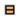

Быстрые ссылки на процедуры, описанные на этой странице:
• |
Объект, к которому применяется стиль или набор стилей, задействует только атрибуты, определенные в стиле или наборе стилей. Например, если применить стиль абриса, изменится абрис объекта, а другие его атрибуты останутся без изменений.
Стили можно настроить и применить с помощью окна настройки Стили объектов и Свойства объекта.
В окне настройки Свойства объекта отображаются атрибуты, заданные с помощью стиля, рядом с названиями которых находится зеленый индикатор источника, содержащий вертикальную линию посередине . Индикатор источника — это небольшой квадрат рядом с именем атрибута. В случае отсутствия примененного стиля отображается пустой индикатор источника . Если примененный стиль переопределен, цвет индикатора источника становится оранжевым, при этом значок индикатора содержит горизонтальную линию посередине .
| Применение стиля или набора стилей к объекту |
1. |
С помощью инструмента Указатель |
2. |
Выберите Инструменты |
3. |
В окне настройки Стили объектов выберите стиль или набор стилей, а
затем нажмите кнопку Применить к выбранному.
|
Стиль можно также применить щелчком по индикатору источника
рядом со свойством объекта (абрис, заливка, символ, абзац или
фрейм) в окне настройки Свойства объекта с последующим
выбором стиля в списке стилей.
|
Стиль или набор стилей можно также применить к выбранному
объекту с помощью любого из следующих методов.
|
• |
В окне настройки Стили объекта дважды щелкните стиль или
набор стилей.
|
• |
Щелкните объект правой кнопкой мыши, выберите Стили
объектов |
• |
В окне настройки Стили объектов щелкните правой кнопкой
мыши стиль или набор стилей, а затем выберите в контекстном
меню пункт Применить стиль или Применить набор стилей.
|
• |
В окне настройки Стили объектов выберите стиль или набор
стилей, а затем перетащите его на объект.
|
Copyright 2012 Corel Corporation. Все права защищены.